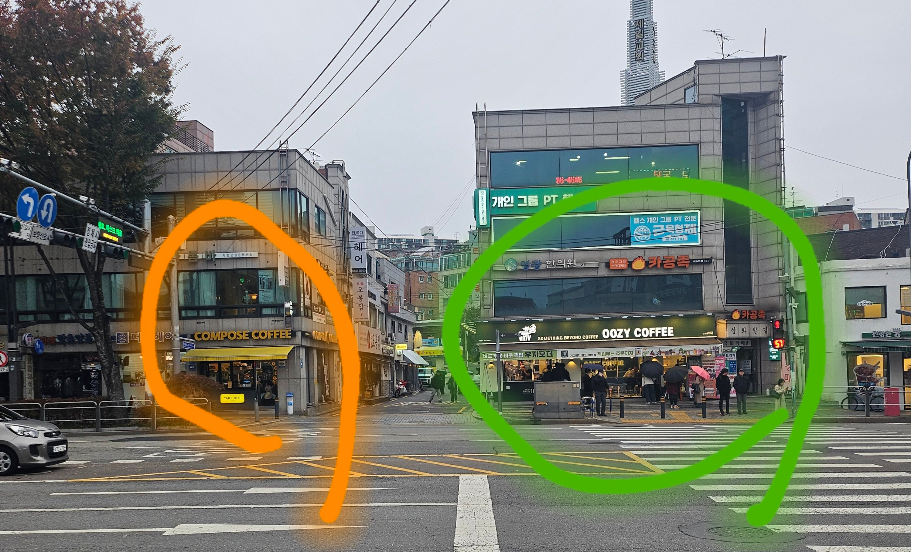

우지커피가 장사가 잘되는 이유를 서술하시오 (5점)

우지커피가 장사가 잘되는 이유를 서술하시오 (5점)
우지커피 오픈한지 2주도 안되서그럼 컴포즈도 장사 ㅈㄴ 잘되는집임 걱정마셈
약국 있던 자리 같은데 우지커피 생겼구나
헐 마즘 저기없어지고 순식간에 생겻더라
커피 맛보다 신호 대기 시간이 매출을 정하는 업종이었네
저기 매장만 반대였으먄?
매장 겁나 크네
저가커피여도 남는게 있으니까 월세 감당이 되겄지?
컴포즈 불좀켜라ㅋㅋ
너 이수 사냐?
그냥 우지가 비교적 최근에 오픈해서 삐까뻔쩍함 + 횡단보도 서있는 사람들 = 사진 상으로 장사 잘되어보일 뿐 실제로 잘되는지 아닌지도 모름
결론은 우지가 공격적으로 가맹점 늘리고 있음+우지가 (입지가 좋아서) 장사 잘된다 인식 심어주기+사람들이 우지도 많이 찾는다는 인식 심어주기 = 바이럴
횡단보도 앞 저거 상당히 중요함
우지가 라떼가 맛있긴하지
우지가 요즘 저가 1황임 맛잇음
직진하면 바로 진입가능 ㅋ
컴포즈 어느기점으로 커피맛이 맹물로 변하고잇음
미세하게라도 있던 고소한 향조차 이젠 안남
작년 11월정도부터 안먹읍